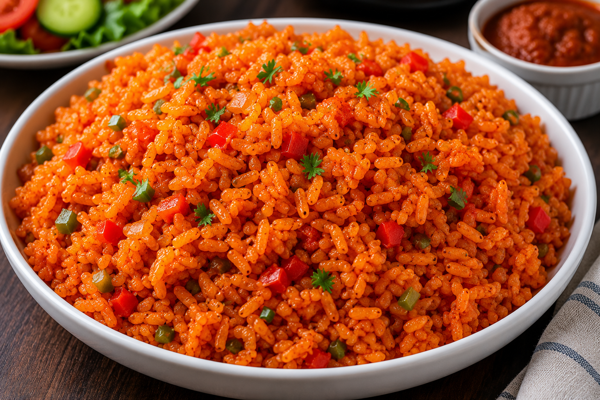

My Favorite Jollof Rice Recipe
Jollof Rice is one of my favorite meals because it is delicious, colorful, and easy to enjoy with family and friends.
Ingredients
- Rice
- Tomatoes
- Pepper
- Onions
- Seasoning cubes
- Vegetable oil

Steps
- Wash the rice.
- Blend the tomatoes and pepper.
- Prepare the sauce.
- Add the rice.
- Cook until tender.
Tip
For the best flavor, allow the rice to cook slowly and absorb the sauce.